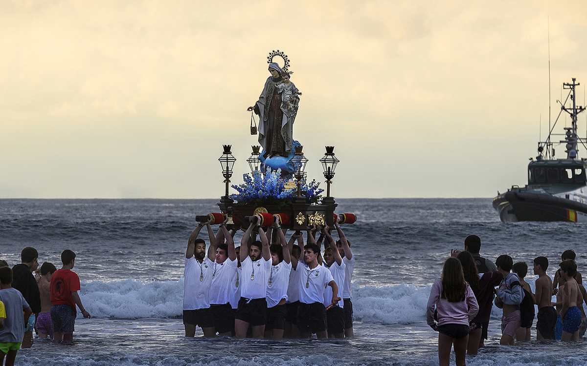
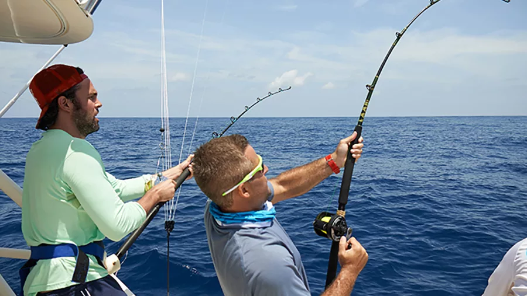

Fiestas Tradicionales
Salinas, como parte de la costa ecuatoriana, es una ciudad llena de vida,
alegría y celebraciones populares que reflejan la identidad de su gente. Las festividades en esta
ciudad se viven con entusiasmo, música y mucha tradición. Uno de los eventos más importantes del
año es el Carnaval, celebrado en el mes de febrero. Durante esos días, las playas y calles de
Salinas se llenan de visitantes que disfrutan de desfiles coloridos, conciertos al aire libre,
y juegos con espuma, agua y pintura. El ambiente es familiar pero festivo, y muchos locales
instalan carpas, venden comida típica y animan a los turistas con música costeña como salsa,
cumbia y reguetón.
Otra celebración muy significativa es la Fiesta de la Virgen del Carmen,
patrona de los pescadores. Se celebra cada 16 de julio y tiene una gran carga espiritual para
los habitantes de Salinas. La festividad incluye una misa solemne, una procesión marítima
en la que las embarcaciones pesqueras, decoradas con flores y banderas, salen al mar con la
imagen de la Virgen. Es una mezcla de devoción y tradición, donde la comunidad agradece por
las bendiciones y pide protección para los trabajadores del mar.
Además de estas fechas principales, también se celebran las fiestas patronales
de barrios y parroquias, con música en vivo, ferias de comida, juegos populares y quema de fuegos
artificiales. En cada evento, el calor humano, la comida típica y la unión comunitaria hacen
de estas costumbres una parte esencial de la cultura local.

|
La Pesca Artesanal: Tradición y Sustento
La pesca artesanal es una de las actividades más antiguas y representativas de
Salinas. Desde tiempos ancestrales, muchas familias han dependido del mar como su principal
fuente de trabajo y alimento. A pesar del crecimiento turístico y la urbanización, la pesca
sigue siendo una práctica cotidiana y valorada por los habitantes locales.
Muy temprano por las mañanas, es común ver a los pescadores saliendo en sus
pequeñas embarcaciones de madera, conocidas como “fibras”, equipados con redes, anzuelos y
conocimientos transmitidos de generación en generación. La pesca no solo es una fuente de
ingresos, sino también una costumbre que refuerza la identidad cultural de la ciudad. Al
regresar al puerto o a las playas, los pescadores venden el pescado fresco directamente,
lo que se convierte en una experiencia típica para turistas y locales: comprar mariscos
recién sacados del mar y observar el proceso tradicional de comercialización.
Los productos más comunes son camarón, corvina, dorado, albacora y concha.
Parte de esta pesca también abastece a los restaurantes de Salinas, lo que garantiza que
la gastronomía local mantenga su autenticidad y frescura. Además, la pesca artesanal
es una forma de vida que enseña valores como el esfuerzo, la paciencia, el respeto por
la naturaleza y el trabajo comunitario.
Esta costumbre es parte del corazón de Salinas, y al observarla, se comprende que más
allá del turismo y la modernidad, aún existe un fuerte lazo entre el mar y su gente.

|